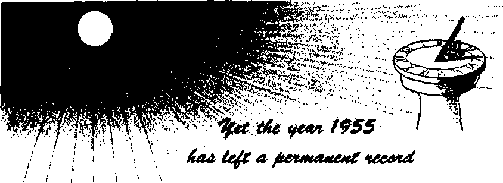

is the first casualty." But what truth
THE MISSION OF THIS JOURNAL
News scurces that are able to keep you awaka to the vital issues of our times murt be unfettered by censorship and selfish interests. “Awake!” has no fetters. It recognizes facts, faces facts, is free to publish facts. It is not bound by political ambitions or obligations; it is unhampered by advertisers whose toes must not be trodden on; it is unprejudiced by traditional creeds. This journal keeps itself free that it may speak freely to you. But it does not abuse its freedom. It maintains Integrity to truth*
“AwakeI” uses the regular news channels, but is not dependent on them. Its own correspondents are on all continents, in scores of nations. From the four corners of the earth their uncensored, on* the - scenes reports come to you through these columns. This journal's viewpoint is not narrow, but is international It is read in many nations, in many languages, by persona of all ages. Through its pages many fields of knowledge pass in review—government, commerce, religion, history, geography, science, social conditions, natural wonders —why, its cover* age is as broad as the earth and as high as the heavens.
“Awake!” pledges itself to righteous principles, to exposing hidden foes and subtle dangers, to championing freedom for all, to comforting mourners and strengthening those disheartened by the failures of a delinquent world, reflecting sure hope for the establishment of a righteous New World.
Get acquainted with “AwakeI’1 Keep awake by reading “Awake!"
PEBU41HSD SiMlMOHTHLT Bt WATCHTOWER BIBLE AND TRACT SOCIETY, INC.
117 A<Um« Strict Hnn'klyu 1, N. Y., TL 8. A.
N. FL esohu, Preridcnt Cmamt Suits*, Heoraitttii
Printinfl this Imum; 1,525,000
U wfetita mtaclM l« laMdMC StalBtotUr—UrtiMB, ftnciit, Tnoch.
iltrvm, HoUuSbb. Xjrw«ji»c, £pMlita. flwtdisb. Hatti? - Dftairt. Viwl. FgrtafiiMc. UinloUC.
Mm Y«*Lr nil
HttriM. ILS.. 113 iiUsz4 St,. BmclCjn 1. N.I. fl ftwfrlllc. 11 B«Wor4 Ud., itmtAiU. N.B.W. i/-CaMdlL <0 Mo Art . ftnet* 3, OnUfU fl EmOwU, SI Crtrtc Ttn-uw, Lc»wc, w. 2 T/-
N«w ImM, O.t.O ■« so, VtLiutoa, r 1 T/ SHtk SfriM, PrhiU Big, SlKiWn^la, T’J. 7/
Five cents a espy
*IW nt 1*1 Mi AdoM bt #4*1 <• A» fa TW t»* tty is Mn*)fanet wt2i rwlitUtu u iwutn M_'i Mhwr tf ■moo. Ufjfilr.Uiw in tttwUS M BtmNt* Cmc cmhiHm whrrt eg cfla J* loetML t/ taucMtina] acmv unkr air. Sfefacrfatka nt* fa Ifatrwi cwetriiM tre feeiw rtiiiad la tout tutifc7 Mcllaa if urinUa (r/Ji rtaml blink) !■ mi it nut tw iitue* btfert *xt*eci^tfao »i Urw. CfcioH fa *Mrw TtMi *»; fa ow Mt* ■UU bt USKtld rfiCtlr* within Duett raw cW u writ u tww MSnu.
teunri m weoi^-duc wittrc u StjuUjt* N * vt fa Mirctt 3, IS7» MbM fa I' I a
CONTENTS
The Vatican a Bulwark
Writer Boycotted for Criticizing Churches 4
Speak Truth and Let Freedom Ring!
The Plight of a State Church
Beer—from Ancient Babylon
“Your Word Is Truth”
Jehovah’s Witnesses Preach in All
Do You Know?
IT IS becoming increasingly popular to refer to the Roman Catholic Church as a “bulwark against communism." Recently, the vice-president of the United States, Richard Nixon, embellished the familiar phrase. He called the church “one of the major bulwarks against communism and totalitarian ideas.” Though his statement went unquestioned by the masses, there were a few who challenged it. One of them was Dr. John A. Mackay, president of Princeton Theological Seminary, who said: "At the risk of being termed a bigot, I am compelled sorrowfully to say that the exact opposite is true.” Obviously, someone made a misstatement. To find out who we have but to test the Vatican’s bulwark.
What do we find? Said Dr. Mackay: “Two decades ago the Roman Catholic church made concordats with the totalitarian rulers of Italy and Germany, Benito Mussolini and Adolf Hitler.” Our first test of the bulwark reveals Vatican collaboration with totalitarian tyrants. Testing further, we find that practically the whole world condemned the invasion of Ethiopia, but the Italian clergy as a whole not only voiced no opposition to Fascism but openly endorsed Mussolini’s conquest of Ethiopia, 19 archbishops and 57 bishops saying: “Catholic Italy thanks Jesus Christ for the renewed greatness of the fatherland made stronger by Mussolini’s policy." That policy was totalitarian.
“Today the Roman Catholic Church,” said theologian Mackay of the Vatican’s bulwark in Spain, “has a concordat with, and is the chief supporter of, Francisco Franco, the totalitarian ruler.” It was just last year that the Vatican awarded Franco its highest pontifical decoration—the Supreme Order of Christ! Yet it was Franco who rejoiced at the conquest of the Philippines by the Japanese. And it was Franco who rejoiced when the Vatican, soon after Pearl Harbor, opened diplomatic relations with Japan. Thus the Vatican has climbed not only on the Franco, Nazi and Fascist totalitarian bandwagons but on the Japanese totalitarian bandwagon, climbing down only when the wagon lost its band.
What kind of bulwark has the Vatican built against communism? Catholic countries, of all countries, should be exemplary bulwarks against communism. Yet what do we find? As Dr. Mackay puts it, the lands that are predominantly Catholic are actually “breeding grounds for communism.”
It is true in Latin America, where some 90 per cent of the people are Catholic.
It is true in France, where priests have gone to work in factories to try to win back communism’s converts. Result: The “worker priests” did not expect to see concrete results for several generations. But there were unexpected results: Not a few of the priests fell victim to Red propaganda and turned Communist! Where was the bulwark?
And where is the bulwark in Italy, where one third of the Catholic population votes Communist? In spite of the pope’s threat of excommunication, the Communist party grows, last year by 180,000 members —most of them baptized Catholics!
Where, then, is the Vatican’s bulwark? Our test reveals that it is a myth.-Ever since the days of murderer Constantine, the Catholic Church has collaborated with totalitarian dictators. In Catholic lands the church has been no bulwark against communism. Why? Because it has refused to follow Christ’s example. Instead of offering dictators the "Supreme Order of Christ,” Jesus had nothing to do with them, saying; "My kingdom is no part of this world.” —John 18; 36, New World Trans.
UAcltat Hoy cotta d fiot @rltlciyng Hkitiekai
Dr. George W. Lane, who writes a column for many newspapers throughout America, has sometimes discussed the matter of gambling in churches. In the San Jose News of January 22, 1955, Dr. Lane brought up the subject of not only gambling but also smoking in churches: “Last year our American Medical Journal refused to accept any more advertising from tobacco companies. ... If a branch of science, such as medicine, feels that way, then what do you readers think should be the attitude of churches? Do you believe that churches should endorse anything that is harmful to human health or happiness ? Should the churches even lend their indirect support to any substance or custom that sets a bad example before youth?’’
Then Dr. Lane commented: “Some clerics bitterly attack me for even raising sucli questions. Recently the aged bishop of a certain church ordered my column canceled by the leading newspaper in his state under threat that he'd boycott that paper among all his parishioners if my column was still printed. And my column was dropped! Four other newspapers in other parts of the U.S.A, also dropped my column at the same time.
"Nowadays many churches, as well as colleges, are growing so open-minded that they will smile tolerantly at almost any kind of behavior if they think they can gain a cash donation from that sinner. ‘Sometimes an open mind is too porous to hold a conviction’ runs an old adage that is still quite correct. ‘There’s so niuch bad in the best of us and so much good in the worst of us that it does not behoove anybody to criticize his neighbor,’ is a prevailing motto of these too porous minds who try to rationalize. But the essential purpose of morality is to criticize: If any habit or custom causes children to stumble, or directs them into wrong, then all educators, religious as well as secular, should criticize.’’
“COPVDUCH”
At Seattle, Washington, it seems that the expression “copycat,” meaning one who imitates the ways of another, may have to be amended to “copyduck.” For the Dugan family have a mixed-up duck that copies the ways of the family dog. This duck is so befuddled that it tries to do everything the dog does—he even chases cars. But the duck has one serious trouble in playing the role of a “copyduck.” The family dog loves spaghetti, but every time the duck tries to eat it, the same thing happens. The duck gets the spaghetti all twisted around his bill and nearly goes crazy.
is the first casualty." But what truth
is emerging today despite war, bans or censorship causing freedom to Hng throughout the land? Have you the courage to speak it?
TEN million times a day or more on the editorial page in the Hearst newspapers appears the word TRUTH in all capital letters. Yet for more than half a century these papers have been documentarily accused by presidents and writers alike of having deliberately published falsehood. And one of the two major newspapers of Russia, which is now devoted to distorting the facts and printing barefaced lies, is named Pravda, which when translated into
“A more modest institution, but one whose works have been placed along with astrology and spiritualism on the Vatican’s Index of Prohibited Books, the Christian Science Church, advertises Mrs. Eddy’s Science and Health as ‘the truth that makes free.’ ” Adolf Hitler, advocate of the Big Lie, had also said: “You cannot keep the truth buried forever. Truth is bound to emerge" (Times, September 24, 1939), and from Madrid, on June 21, 1945, the Associated Press reported that “Truth, Spanish Style, [is] Franco’s Aim.” The Associated Press itself is dedicated to nothing but “Truth in News.”
our language is “Truth."
Marshall Field’s favorite slogan was: “Read
Religious sects and cults, both pagan and so-called “Christian,” which have claimed a monopoly of truth and believed the fable that the end justifies the means, have waged wars and barbaric crusades and have committed flagrant murders in the name of truth. “More recently under the imprimatur of Cardinal Spellman there appeared a pamphlet entitled Freedom of Worship. In it is proclaimed the belief that ‘the Catholic Church is the only organization authorized by God to teach religious truth? But Father Coughlin, a less modest propagandist, declared in his Social Justice (November 14, 1938): ‘The only source of truth is Father Coughlin? There was no protest from the Vatican.
the truth in the Chicago Sun?J One word appears on Harvard University’s shield: Veritas (Truth). The Advertising Federation of America is rather ironically also dedicated to “Truth.” Viewing the news for what it is, columnist Samuel Grafton writes: “Truth is on page 37.”—Quotations are from George Seldes’ book, TeU the Truth and Run, pages 281, 282.
With so many persons, institutions, organizations, societies, religions, etc., claiming to possess truth, a matter that scientists, historians and philosophers have speculated about and presented theories on for ages, it is a wonder why freedom does not ring, why doubts, fears, trepidations and anxieties sweep the earth; unless of course
the truth that the world possesses is not really truth; that its light is not light but darkness. As the Master of knowledge once said: “If in reality the light that is in you is darkness, how great that darkness is!’’ The world’s present plight is described as one of darkness: “For, behold, the darkness shall cover the earth, and gross darkness the people.” As J. J. Rousseau declared: “All men were created free, and now they are everywhere in chains.” —Matthew 6:23, New World Trans.; Isaiah 60:2.
This world has, technologically speaking, accomplished miracles on land and in the air. But said Adlai E. Stevenson to an audience at the Columbia University Bicentennial Conference June, 1954, "despite all of this wisdom, this exertion, this goodness the horror of our time in history is that things are worse than ever before. There is no peace; we are besieged, we are rattled. Perhaps we are even passing' through one of the great crises of history when man must make another mighty choice. Beset by all of these doubts and difficulties, in which direction then do we look?” Stevenson answers: “We look to ourselves—and we are not ashamed.” We look “to individual Americans, to their institutions, to their churches, to their governments, to their multifarious associations—and to all the free participants in the free life of a free people. And we look, finally, to the free university whose function is the search for truth and its communication to succeeding generations.”
Yet this great body readily admits it is “besieged,” “rattled,” without “peace,” filled with “doubts and difficulties,” and that "things are worse than ever before.” Strange this paradox, is it not? Because where there is truth there should also be freedom, peace, liberty. Where there is light there should also be security and direction. The world has none of this. It is bewildered, frustrated, perplexed, which is conclusive proof that it is without light, without the real truth. Its many institutions and periodicals labeled ‘-‘Truth” do not have this truth in them. Darkness is accepted for light. And the people continue to grope about for a way out.
Describing present conditions, Isaiah wrote: “We look for light, but, behold, darkness; for brightness, but we walk in obscurity. We grope for the wall like the blind.” “Truth is fallen in the street, and uprightness cannot enter. Yea, truth is lacking; and he that departeth from evil maketh himself a prey.” Jeremiah simply stated: “Truth is perished.”—Isaiah 59:9, 10, 14, 15; Jeremiah 7:28, Am. Stan. Ver.
What Truth in Newspapers?
Where to look for truth today is a problem. And how to distinguish it from falsehood is another problem. Where is it to be found? In newspapers? In radio and television broadcasts? In the mounting deluge of periodicals and books? Hardly. Franklin D. Roosevelt, when president of the United States, blasted the “free press” with this .truthful sentence: “An amazing state of public misinformation exists in the United States.” Dr. George Gallup called Americans "the least well informed.” In a public address editor Louis B. Seltzer of the Cleveland Press referred to the United States as “a nation of economic illiterates.” Is this not partly the reason for the nation’s fears, even its illiteracy? Emerson wrote: “Fear always springs from ignorance.” Virgil defined fear as: “The proof of a degenerate mind.” If ours is the age of enlightenment, there should be no fear. But alas! fear is everywhere, mocking this world’s claim to enlightenment.
One of the best-informed men of our time, Sir Norman Angell, had this to say, as reported in the New Republic on June 2, 1941: “With our vast and complicated paraphernalia of making things known, for telling the world the news, the world somehow manages to miss just the news that is often of the most vital significance, with direct bearing upon today's policy; indispensable to life-and-death decisions; news which relates not to matters of opinion and controversy, but to actual events.” Perhaps, even more brutal in his expressions was Thomas F. Ogilvie in his Jersey Times (February 26, 1949), where he wrote: “Until America develops an educational system that teaches citizens to spot the phony columnists and commentators, and not to parrot the propaganda they read and hear, the people cannot be truly educated. Without the light and truth, wise and proper decisions are impossible. The shame of America is that Americans, despite all their technological marvels, know more things that are not true than any other people on earth.” Rather shocking to find this true in a nation that boasts of a free press.
Defenders of the hash now served as truth like to shift the blame on the people for this deplorable state. The people, they say, “get the newspaper press they deserve. Or want. The people do not want to be informed, they want to be amused, and that is why they spend fifteen hours listening to the comic programs on the radio for each hour they spend listening to news broadcasts or any sort of educational programs.” Furthermore, a survey conducted by the American Newspaper Publishers Association revealed “82 per cent of the men and 70 per cent of the women reading the comic ‘Dick Tracy’ while only 28 per cent of the men and 25 per cent of the women read ‘even one paragraph of the most important news story that day? ” Pageant for October, 1950, declares that hours totaling more than “52 waking days” out of a year are spent by adults before television sets. And as a rule the vast majority of these hours are consumed in entertainment programs. The reaction toward news andeducational features is lethargic.
What Truth?
What truth escapes the attention of the people? The same truth that rocked the world in the first century after Christ. Vital truths were being proclaimed that affected the lives and destinies of all peoples, yet they went unheeded. When the Bearer of light and truth stood before the Roman ruler Pilate, he stated that his purpose for coming to earth was to “bear witness to the truth,” and that “everyone that is on the side of truth listens to my voice.” Pilate replied: “What is truth?” but did not stay to hear the answer, because he was not particularly interested. Millions of persons today, just like Pilate, pose the question, but do not wait for the answer, because they do not have any particular love or devotion for truth. They are too self-centered, egotistical and proud to hear what truth is.—John 18:37, 38, New World Trans.
Nevertheless, Jesus did give the answer, not to Pilate, however, nor to the haughty people, but to lowly men who followed him. In prayer to God he said: “Your word is truth.” Centuries before, King David prayed: “O Lord Jehovah, thou art God, and thy words are truth.” These men spoke of God's written Word the Bible as truth. It is God’s Word, his message of truth as proclaimed in the Bible, that is a "shield and a buckler," to his slave; 'a lamp unto our feet, and a light unto our path? It is God’s Word of truth that has been tossed into the streets and that has perished from the land. It is for this truth that there now exists a spiritual famine. Dr. John H. McComb admitted that Christendom “is literally famished for the Word of God.*' Dr. Pitt stated: "Disillusion, frustration and cynicism have engulfed the clergy and the laity.” The president of Harvard University recently declared: "We have not been well taught about religion and there is as a consequence a very widespread religious illiteracy and correspondingly little religious practice.” The foretold spiritual famine at Amos 8:11 has engulfed the land. —John 17:17, New World Trans.; 2 Samuel 7:28; Psalm 91:4; 119:105; 117:2, Am. Stan. Ver.
On the masthead of the papers controlled by press lord Roy Howard appears the slogan: "Give light and the people will find their own way.” But from its pages the light does not emanate that sets people free and lets freedom ring. Jesus said to his disciples: “If you remain in my word, you are really my disciples, and you will know the truth, and the truth will set you free.” “Undeserved kindness and the truth came to be through Jesus Christ.” It is this truth that is vital, that sets free, that lets freedom ring. Censor this truth and there is no truth, no freedom. Ruth McKenney declared that “man has no nobler function than to defend the truth.” Particularly true is this regarding Bible truth, because the destiny of all mankind hinges on its proclamation.—John 8:31, 32; 1:17, New World Trans.
"But who in a world where people believe the newspapers still seriously believes in the Bible?” asks Denis de Rougemont in his work The Devil’s Share. “It is a fact that modern man experiences less difficulty in lending faith to the lies of the day than to the eternal truths transmitted by holy books.” But regardless of that fact, there emerges today an organization, the New World society, whose avowed purpose is to speak Bible truth. Not the “truth” of the countless bewildered religions of Christendom and heathendom, but the truth of Christianity, as Jesus and his apostles spoke it—Bible truth. It has already revealed itself as a tremendous force for freedom, freeing great crowds of people out of all nations, kindreds and tongues; releasing them from the bondage of false religion to New World freedom. “For such freedom Christ set us free. Therefore stand fast, and do not let yourselves be confined again in a yoke of slavery.”—Galatians 5:1, New World Trans.
It is mandatory to speak truth to maintain freedom. To Israel returning from Babylonian captivity God issued this command: “Speak ye every man the truth with his neighbor; execute the judgment of truth and peace in your gates." The apostle Paul repeated this same counsel to those embracing Christianity: “Speak truth each one of you with his neighbor,” he said, “because we are members belonging to one another.” In no other way can doubts be dispelled and suspicions and fears removed. Only by cultivating a deep love for truth will one be courageous enough to speak it. As Montaigne once said: “I speak the truth, not so much as I would, but as much as I dare; and I dare a little more as I grow older."—Zechariah 8:16, Am. Stan. Ver.; Ephesians 4:25, New World Trans.
Only the spoken word of God can give mankind the free mind that William Ellery Channing defined some hundred years ago, that mind “which jealously guards its intellectual rights and powers, which calls no man master, which does not content itself with a passive or hereditary faith, which opens itself to light whencesoever it may come, and which receives new truth as an angel from heaven.” How many in this world have minds that fulfill Channing’s definition? Not many. Is not this its failure? Speak Bible truth, therefore, and freedom will ring!
By '’Awake F correspondent in Argentina
SPRING in Argentina this year brought along with it something more than blossoms and milder weather. It put an end to a long-drawn-out night of tyranny. Perdn’s regime came to a very sudden and almost unexpected end and a sigh of relief was heard throughout the country.
Before we enter into the recent happenings a little history will prove helpful. In 1941 the presidency of the nation was in Ramdn J. Castillo’s hands, and his bad government was being severely criticized, due mainly to its pro-German tendencies and very bad administration. Toward the end of the year, to maintain his position he declared a state of siege. This state continued till a military revolt ousted him in 1943. The joy it caused many was to be but short-lived.
The military junta changed presidents with alarming rapidity, becoming relatively steady under President Ramirez who, after some time, was succeeded by President Farrel. Ip the first stages of this revolution Juan Domingo Peron was a figure of small importance. However, it was agreed that he would take the lowly and unimportant job of secretary of labor. He was quick to use this post to win the support of Argentina’s laborers by decreeing higher wages and better working conditions. By October, 1945, he was vicepresident, but the conditions of the govem-ment had already changed the former joy of some into tears of desperation as a worse government set in.
About one thousand of the most prominent lawyers of the country had been arrested, together with judges, newspapermen and politicians. A strike by students caused Perdn’s arrest by the army, but his next move was to call in the workers, who declared a week-long, nationwide strike, forcing the military leaders to free Perdn. This was the dark day of October 17,1945, when Peron was brought back stronger than ever to the government house to dictate the course of the nation for ten tragic years.
He was elected president of the nation in direct violation of the constitution, which provided that neither the president nor the vice-president could be re-elected till a period of six years had intervened between the previous office. Thereafter he began profiting on the sorrow and hunger of the peoples of Europe by buying grain and beef from the producers at fixed, not market, prices and selling them to those nations at exorbitant prices. With these profits he began nationalizing railways, telephones, airlines, buses, etc., paying what he considered a just price. Meanwhile he declared that all ships that had for a long time been docked in the country due to war conditions had become national property.
Just before being elected president he married actress Eva Duarte. She would be with him during the remaining few years of her life. Hers was truly an iron hand in a silken glove and was more feared by opposers than Peron himself. Her speeches were strong and full of slang, which attracted the workers. She presided at Perdn’s former office, the labor ministry, and had a pretty good control of everything
going on. She distributed abundant gifts to the needy and received “voluntary” contributions from all big firms. Any firm that would not “voluntarily” contribute to her fund for social welfare would soon find inspectors on their premises who would have no trouble in finding some violation of the municipal or governmental laws. They would apply a fine and sometimes close down the establishment. These gifts to the needy people always paid off when big public demonstrations were needed.
Exit Freedoms
Free press disappeared and by 1951 La Prensa, called the most important Spanish-language newspaper in the world, was taken over for criticizing a railway strike. Control of newsprint provided abundantly for official papers, but drastically cut the provisions for liberal ones. Radio was just a tool in the government’s hands. Congress was a rubber stamp in the dictator’s power. To suit his needs and whims Congress would just as soon pass a law as revoke it.
The constitution was rewritten to suit his policies and to make it possible for him to continue in power. It made all private interests and property subject to the social interests of the country, therefore making everything unstable and insecure.
A decree with the pretended purpose of keeping a registry of all religions was issued early in Perdn’s presidency, but its sinister purpose was soon to be seen. Although the constitution guaranteed free exercise of religion, all religions had to register, giving the addresses of all meeting places and churches and the names of their officers and of all ministers. Jehovah’s witnesses complied with this law and were soon to see its object. A peaceful Christian meeting during an assembly addressed by the Watch Tower Society’s president, Mr. N. H. Knorr, held on its duly registered premises was interrupted and some five hundred present were taken to the police station, registered and released in the early hours of the momingof April 4,1949. Shortly after this the Society was notified that it was not granted registry, which meant, in other words, that it could not act as a religion in the country. This was followed by a decree from Argentina’s president himself withdrawing the legal status from the Society. Upon appeal, another decree confirming the first one was issued. It was a hard blow designed to wipe Jehovah’s witnesses out of action. Great were the expressions of joy from both the Catholic Church and Protestant groups at this action against the only people really bearing the Almighty’s name.
But what about the witnesses? At that time there were 1,135 ministers on the average. They had to go underground to continue their preaching work. Six years of underground activity have increased their numbers to a peak of 3,865.
The Catholic Church was to realize that this instrument of oppression they had supported was a two-edged sword, for Peron used this same instrument in banning Catholic meetings and processions, deporting priests and in every way possible making the Catholics realize that their former friend whom they had supported was now a bitter foe.
Successful Revolution
Several attempts were made by the opposition to overthrow the government, but these failed. Last June 16 saw a sanguinary attack upon Buenos Aires and the government house, causing many deaths, bqt it too failed. However, Peron decided to present his resignation, but did not proceed to do so in the constitutional way, which would have been to do so before the Congress. He presented his resignation to the Peronista party. A grand demonstration was staged on August 31 by the CGT (General Confederation of Labor) and the workers went to Plaza de Mayo to request that the resignation be withdrawn. Simultaneously, the puppet congress met and decided that' Peron stay. Thereupon Perdn spoke to the crowds and incredibly invited them to kill five for every one of them that might die, generally building up an atmosphere of hatred and vengeance.
The answer did not delay and on September 16 another revolution broke out according to first news in the city of Cordoba, near the center of the country. More news soon came in saying that the naval base at Rio Santiago, near Buenos Aires, had rebelled, and also that in the provinces of Corrientes and Entre Rios some units of the army had rebelled. Fighting broke out and in some of these places the rebellion was quashed, but no sooner had this been done than other forces rebelled—Bahia Blanca on the south, Tucuman to the north. The fiist news was that the fleet was loyal and was steaming up to help the government, but then it started shelling and bombarding Mar del Plata, a summer resort where the submarine base is. This did not take long to fall into the revolutionary's power. Then the army rebelled in the west, in Mendoza, San Juan and San Luis. The fleet came up to the Rio de la Plata and issued an ultimatum that, if by 1 p.m. Monday, September 19, President Perdn had not resigned they would bombard Buenos Aires and the oil refineries at La Plata, fifty kilometers to the southeast.
Just as the time was passing, announcements over the Argentine radio network were made by the commander of the loyal army saying that in view of the ultimatum they would accept dealing with the rebels. Soon a letter written by Perdn himself was read over the radio presenting his resignation. A truce was called. Negotiations started Tuesday evening on board the flagship, and unconditional surrender by the loyal armies put an end to Perdn’s ten-year-old dictatorship. Thus three days’ fighting sufficed to put an end to a seemingly endless nightmare, and Perdn’s machine built upon blood and oppression crumbled in ruins.
General of the army Eduardo A. Lonar-di was named provisional president. In a simple speech over the radio he promised that the rights attained by the workers would be respected and that freedom of speech, worship, press and assembly would be fully restored. He entered Buenos Aires triumphantly on Friday, September 23, and was given a very enthusiastic reception. The Argentine people invaded the streets waving Argentine and Uruguayan flags. All the buildings were decked with flags, some of the Vatican State, and cars paraded all over the city. People could not hold in their joy and ran around shouting Libert.ad!—an indication of how much they desired freedom.
A mammoth manifestation, greater than any Peron had ever managed to produce even by force, was held in the historic Plaza de Mayo while the provisional president was sworn in. After the ceremony President Lonardi spoke in a simple, pleasant way to the people, emphasizing that justice and love were to be the motives of his temporary government. He invited the press to criticize him freely, and again emphasized that freedom for all religions, freedom of assembly and freedom of speech definitely would be restored.
The general opinion is that there is much hard, delicate work ahead of this government. The Peronistas are not taking this sitting down, and unrest and uprisings have taken place in several sections of the country, obliging the army to intervene and in no mild terms. Yet hopes are high that the situation in the country will take a definite turn toward more freedom.
However, this turn to relative freedom should not enslave people into ignoring the call to real freedom, which call is from above and is being constantly sounded throughout the country by Jehovah’s witnesses in harmony with the prophetic pattern at Leviticus 25:9-13 (New World Trans.): "You people should cause the trumpet to sound in all your land . . . and proclaim liberty in the land to all its inhabitants-’’
By "Awaka!" correspondent tn Trinidad
ONTO the otherwise tranquil movement of life in beautiful tropical Trinidad hurtles its daily paradox, the hustling taxi 'driver. In striking contrast with the tempo of activity in general he is seen everywhere furiously dashing to and fro seeking fares and discharging his passengers. His is Trinidad’s busiest profession.
Although the island of Trinidad is small, It has a large population that does a lot of traveling. Scheduled transportation runs only at certain times during the day, and many wish to travel at other hours if they can get something to carry them. It is to fill this transportation gap and also to offer stiff competition to the railway and bus companies that this island’s colorful taxi drivers enter the picture.
J.! By far the greater number of taxis are individually owned and operated by the owner or a hired driver. For the shorter runs and service in town the small British cars are mostly used, and whole processions of them can be seen racing along the bus and trolleybus routes vying with the buses and one another for fares. To the observer it seems that every other car is a taxi, and it is, there being over 4,500 registered in 1953 and many more since, if.’ With taxi fare to San Fernando, thirty-five miles
and a “drop” in Port of Spain costing merely six cents, it can be imagined what a scramble there is for business. Besides, many drivers are hired and are expected to turn over eight or more dollars daily to the owner of the taxi, In addition to making their own living. Of course, tourists are considered fair game with an open season on them all the time.
Opposite the railway station in Port of Spain where taxis to San Fernando stand; it is a common thing to see two or thre«;drlvers all trying to induce a prospective passenger into their respective taxis. One inducement is to have a “decoy” in the taxi to make it appear that the load is about made up so that the car will soon start its trip. Eventually the depoy gets out to make room for the final passenger.
The cutthroat competition has a very bad effect on the driving habits of the average taxi driver. Every rule of safe driving is broken, with skill and luck being depended upon in dangerous situations. The driver passes on curves, on hills, at intersections; in fact, he will overtake and pass anywhere and everywhere he thinks there is the remotest possibility ■of doing so. The local accident and death rate is not to be envied.
For all his faults, however, the taxi driver does render a valuable service to the Trinidad public and serves it often where other services fail. He is industrious, and works hard and long hours for his daily bread. He shows a certain spirit of independence in making this job for himself. Watch him hopefully speaking to the passers-by. “South, Chief?" “South, Madam?” Then, his load made up, he roars down the road, the busy taxi driver in the peaceful little island of Trinidad.
By “Awake!” correspondent in Norway
HERE is no escaping it, the 930-year-oJd Norwegian State Church has come into a plight—a plight partly caused by her dose relationship to the state. On the one hand she has the membership of a population that shows complete indifference toward the church, and on the other hand she is financially dependent upon a state that has recently begun maintaining that it should have the right of determining her doctrines, as well as paying her expenses.
The present plight of the church can be boiled down to two big problems: What can be done with her drowsy sheep? And what should be done about her relationship to the state?
At times clergymen mention this plight, at times they propose remedies, at times they ask whether they themselves are to blame; but never are they allowed to forget their predicament. Always some new crisis emerges, or some embarrassing facts come to light, to be publicized toy the press or by the state. For instance, on a Sunday morning last January two re-[>orfers from Aktuell, Norway’s biggest picture magazine, visited two of the largest churches in Oslo, and in their January 29 issue told what they had found. On its front page their magazine asked: “Have the Norwegian People No Need for Religious
Sendees?” The point was stressed with pictures of the nearly empty churches. In the first church, with a capacity of 1,000, only fibout 20(j people were present, while only 50 churchgoers had found their way into the other church, with the same capacity.
The reporters were struck with the fact that they did not find a single youth in either church. *'A great part of the churchgoers tottered into the church with cane in hand,” the magazine observed, and it estimated that the average age of the people present must have been well over fifty years. It said that the hard fact “is that the services of the Church no longer appeal to the people,” and added: “The Church is becoming a colossus on clay feet: it does not have the solid foundation of fervent worshipers any vigorous organization must have. The Church may continue to exist by virtue of grants from the State Budget, of course, but then only as an empty shell, an institution accepted out of sheer indifference.”
Bishop Kristian Schjelderup of Hamar said in 1950: “We clergymen should simply ask of ourselves if the reason for the unbelief in our message of God might not partly be due to us, who preach it. If Church and Christianity shall be regarded as a force by modern man . . . then we must descend from our lofty position—we must come down from pulpits and educational platforms—and go out where life is lived, out to seeking the needy people.”
Another obvious reason for the public apathy is that clergymen often neither believe nor preach Bible doctrine. The fall in Eden, the Flood and the Bible miracles are regarded as sheer myth and legends. Instead of teaching the creation account of the Bible, these clergymen resort to the evolutionist fables of man descending from some apelike animal. Thus, things like this happen:
A teacher in cne of Oslo’s colleges, a minister, last year was asked where Cain got his wife. At first the teacher stood baffled. Then came the unintelligent answer: “Probably he married a man-ape, of which there certainly must have been many at that time.” No wonder the younger generation fails to show up in the churches, when the ministers preach from a book in which they themselves have no faith, and when they do not even know that Cain had sisters!—Genesis 5:4.
These clergymen do not even preach according to their own creeds! At least, not if one is to believe a survey made in 1950 by an orthodox clergyman, Olav Valen-Sendstad, Ph.D. Analyzing fifty-seven sermons given over the Norwegian state' radio during one year, he found that out of the fifty-seven sermons 22.8 ]>er cent were false to church doctrine, 50.9 per cent were of no interest, 14 per cent were problematic, while only 12.3 per cent fell into the category he listed as true.
Of the false sermons Jie said that liesides talking contrary to God’s Word they had mentioned Jesus Christ in such vague terms that the name “Jesus” might as well have been replaced with the names of Mohammed, Buddha, Socrates, Kant or any other ‘'great” name. At least, the contents and meaning of the sermons would not be disturbed by this, he said.
His survey won nationwide attention and was received with joy and much comment by numerous anticlericals in Norway. The clergymen who were attacked, however, did not come out and defend themselves publicly. As usual, they found silence the better weapon.
Should the State Rule the Church?
When questioned about why the church and state should be so closely associated, clergymen usually defend this association by referring to their interpretation of Romans 13:1, saying that the “higher powers" mentioned there are the state. During the war this interpretation caused some trouble, however. Most of the clergy remained loyal to King Haakon, who had fled to England, while a minority served Norwegian Nazi fuehrer Vidkun Quisling. Both factions asserted that they were serving as the “higher powers”—and what was to be made of that?
In postwar years clergymen have tried to impose some qualifications upon their false interpretation of what the “higher powers" are, so that, for instance, Nazis and Communists could never be regarded as such even if they for med a regular government. But the clergymen have, incidentally, kept their mouths closed as to the position of Norway’s present Labor government, which in no respect could be dubbed a proreligious regime. Evidently the task of operating a state church in today’s rapidly changing world is not easy!
Then in 1953 came the violent Norwegian hell-fire debate. An orthodox theological professor threatened his radio listeners with hell-fire. Public reaction against the threat was spontaneous; a bishep stated that the hell-fire doctrine was contrary to the religion of love—and the fight was on! (See Awake’ June 22, 1954.) The debate, which was carried on in the public press for more than a year, gave the clergy a rare opportunity to tell the public what they meant on hell-fire. But as a rule they took no stand whatsoever. They were silen 1 The people’s respect for these clergymen did not increase after that.
As a result of this struggle between powerful personalities within the church; the government ordered professor in law Dr. Frede Castberg to define the state’s authority in its relationship to the church. Castberg wrote a learned treatise to the effect that the state might abolish hell-fire teaching in public schools and could handle questions of faith and confession without asking the bishops, or could even act against their advice if it so preferred.
In a debate with the professor, internationally known Bishop Eivind Berggrav stated that there was "no question of the fact that the Church was being directed by the State.” And of course not! Nominal head of the church is Norway’s 83-year-old monarch Haakon VII, but the real power in this constitutional monarchy resides with the Cabinet and the Parliament, meaning that the real head of the church is the state.
Castberg, in his treatise, was only drawing the consequence of this—and .thereby caused rage, nervousness or gloom among the country’s state-paid clergymen. There was some clergy talk of separating the church from the state, but the general feeling was that the bulk of the ministers were too fond of their regular salaries to take such a drastic step. Besides, they apparently reasoned that the Labor government would not go to extremes in its dealings with the church. And at the present time that seems a safe guess to make.
Scriptures Command Separateness!
But the most serious aspect of the situation has been totally overlooked by the learned dignitaries of the church. While they have been busy fighting to maintain a position of power for their church they have entirely ignored the Bible’s warnings against worldly entanglements:
"Quit being fashioned after this system of things.” "Do not be loving either the world or the things in the world. If anyone Joves the world, the love of the Father is not in him.” “If you were part of the world, the world would be fond of what is its own. Now . . . the world hates you.” “My kingdom is no part of this world.” —Romans 12:2; 1 John 2:15; John 15:19; 18:36, New World Trans.
And make no mistake, the “world” here mentioned does not mean “the man in the gutter,” but means “this system of things,” including kings, presidents, parliaments and all other stately institutions. This fact was ignored by Bishop Berggrav when, during his debate with Professor Castberg, he stated: “Till this day the relationship between the Norwegian Church and the State has been like a happy marriage. Will this marriage continue a happy one? One thing is certain, none of the parts want a divorce. It is up to us if this relationship is to continue.”
However, the real church should be espoused, not to the state, but to Christ. For a professing Christian church to enter such a worldly relationship is spiritual adultery, as the disciple James says in straightforward terms: “Adulteresses, do you not know that the friendship with the world is enmity with God? Whoever, therefore, wants to be a friend of the world is constituting himself an enemy of God.” —2 Corinthians 11:2; James 4:4, New World Trans.
No wonder the church has her troubles. Friend of the world and married to the state, and hence, an adulteress and an enemy of God! No wonder she is in a plight! Are you wondering what the end of her plight will be? Then turn in your Bible to Revelation chapter 17 and read of the end of all the false religions that have taken this unclean role by entering into spiritually immoral church-state relationships.
By ‘'Awaktl'1 correspondent in Northern Rhodesia
"A FAIRY tale . . . A wonderful new world.” Thus Churchill, who visited Uganda years ago, described it in his book My African Journey,
Uganda is a British Protectorate and about the size of Great Britain. Due to its having an average altitude of four thousand feet and one sixth of its surface being covered by water, It has a pleasant climate in spite of the fact that it lies astride the equator. The vegetation is luxurious and while many of its areas are still / impenetrable forest others have been cleared for cotton, Uganda's chief product, and for coffee and tea.
Uganda's most conspicuous form of vegetation, however, is the banana tree, which, with its large leaves, grows so huge as to hide most native huts from view. Many types of banana are grown, from small sweet ones the size of a linger to large coarse ones fifteen inches long, which are cooked to form the staple food for Africans here.
As a change from bananas the African Ugandan likes his flying termites. He tricks the termites into thinking rain is falling by placing an ingenious contraption over their anthills, or rather, their termite hills. This causes the termites to pour forth and the hungry African picks them up, pulls off their fragile wings and devours them with gusto, alive and uncooked!
But let no one conclude on the basis of that that the Uganda Africans are uncivilized. On the contrary, Uganda’s five million Africans are well advanced. For the most part they are clothed according to Western standards, women favoring long gowns of brilliantly colored prints that reach to their ankles. The bicycle is very popular, more than a million tires being imported annually. the rcipon rails, wnere the source of the Nile was discovered back in 1862, 3,850 miles from its mouth on the Mediterranean.
There is much big game in Uganda. The elephant is the supreme game animal, and others are the buffalo, waterbuck, hartebeest, many varieties of antelopes and, of course, the lion. The black rhinoceros and the leopard are partially protected, while the white rhinoceros and the gorilla are completely protected.
Today hunting is done for sport, for game trophies and to get ivory, but at the turn of the century the wild game of Uganda was a real threat to the early settlers. Thus in The Man-Eaters of Tsavo we read of a man-eating Hon attacking a railway station (this was at the time the railway Une was first being pushed into Uganda and Kenya). The lion began tearing off the corrugated sheets of iron on the roof of the station and later entered a railway carriage where three Europeans were sleeping, and seizing one of them in its mouth, leaped through the window and had its meal in the "bush" a quarter of a mile away.
Today travel in Uganda is quite safe. At Entebbe, on Lake Vitoria, is a fine international airport, and from that city an 11,000-mile network of roads serves all parts of the country. One of these roads leads to the "Mountains of the Moon/’ a range towering up to 16,794 feet, only a degree or so north of the equator and yet carrying glaciers and perpetual snow. The slopes are covered with gigantic vegetation, wonderfully colored and fantastically shaped.
Primitive Africans claimed that the burned-out volcanoes in the Uganda mountains were the homes of tribal gods. At the Murchison Falls where the Victoria Nile becomes the Albert Nile a black goat is sometimes sacrificed to appease the "Spirit” of the falls.
Uganda's economic condition is very sound and an unusually large proportion of its income is spent on education. When the hydroelectric plant at Jlnja is completed it will make even more progress, as that plant will provide all the power needed for both Uganda and adjoining Kenya. A few miles upstream are

The work of Jehovah’s witnesses has gained a foothold recently in Uganda and since so many thousands of Africans elsewhere have embraced the worship of Jehovah God, it is hoped that many here also will turn away from tribal demonism and learn of the one true Spirit, Jehovah God.
ACCORDING to an ancient Assyrian cuneiform tablet unearthed in the ruins of Nineveh and translated in 1926 by the late Paul Haupt, professor of Assyr-iOlogy at Johns Hopkins University in Baltimore, Maryland, a part of the cargo on Noah's ark was beer. The Bible, however, is silent on this point* A clay tablet written by an ancient Mesopotamian scribe, about the time Abraham was born, reveals that brewing was then a highly respected profession, and that women were master brewers of the .day* Cuneiform records belonging to the British Museum show women as managers or sales “ladies” and in many cases operating their own breweries.
In 1935, scientists from the University of Pennsylvania, digging in Mesopotamia, unearthed records of breweries that antedated Abraham's time by several centuries. “There can be no doubt/' says Albert Neuburger in his book The Technical Arts and Sciences of the Ancients, “that the art of preparing it [beerJ dates back much further still/' Kobert strongly asserted that the descendants of Ham the son of Noah introduced the art of brewing into ancient Egypt
When Abraham sojourned down into Egypt he undoubtedly was surprised to find beer as the national beverage of the Egyptians. Beer was a popular drink in Egypt right down to the very last of the Pharaohs. It was made in a mash tub, of barley steeped in water, and raised by fermented crumbs of bread. When freshly
NOVEMBER 2955 made, it was soft and pleasant to the taste. Diodorus claimed that the Egyptian brew was #‘not greatly inferior to wine in odor and potency* ” (Diooforus, I, 20) They had developed a great variety of beers to satisfy almost every taste* There were sparkling beers, sweet beer, iron beer, dark beer, light beer, perfumed beer, spiced beer— cold or hot, beer of thick, sticky millet There were as many varieties of beer as there were of wine.
Brewing was a highly-respected and well-developed industry. Regarding their quality beer, John P. Arnold in his critical work Origin and Hisjory of Beer and Brewing, page 73, says: “We see that the brewing industry of ancient Egypt, 1400 years before our era, had arrived at a higher stage than it had in either England or Germany 1000 years after the commencement of our own era.”
So Important was brewing in ancient Egypt that women brewers became temple priestesses and the brew was considered worthy to be offered in libaticn to the gods* Egyptians when praying for the dead always petitioned that there be a sufficiency in heaven “of bread and beer.” One hundred and forty-four jugs of beer were offered at the

17
great temple of Medinet Habu, The size of these beer jugs is not definitely known, but it is judged by authorities to have held a. good deal more than a gallon. About 500 barrels of beer a year were used for sacrificial purposes—this was only for a few temples. It is very possible, says Arnold, that four or five times as much was consumed. Raineses HI esteemed beer so highly that he sacrificed 30,000 gallons a year to the gods. This was choice beer made at the royal breweries by Egyptian priests.
Beer was considered not only a food for men and gods, but a medicine as well. The Ebers papyrus, compiled by Egyptian pharmacists 3,500 years ago, listed 700 prescriptions of which 100 contained beer. For indigestion the fruit of the dgam tree, believed to be an olive, in a glass of beer was prescribed, to drive the ailment out of the body. Tehvi (a laxative) mingled with beer was claimed good for colic. Assyrian physicians prescribed beer as a medicine to induce relaxation.
Beer became Egypt’s favorite drink of sociability, a wholesome, friendly beverage. College boys and Egyptian women were far from being abstainers. Sallier Papyri states that “every evening the smell of beer . . . (that) scares men away” was on the breath of college youths. Another ancient record shows a father exhorting his son “to content himself with two jugs of beer and three loaves of bread.” Pictorial representations and frescos taken from the tombs show Egyptian women to be 1 great beer drinkers.
The Israelites Brewed Beer
The descendants of Abraham may have known how to make beer long before their sojourn into Egypt. If not, they certainly knew the art by the time of their exodus. William Smith, in his Dictionary of the Bible, declares that the Jews knew: “1) Beer, which was largely consumed in Egypt under the name of zythos—made of, barley.” An interesting observation is made by Arnold, who says: “Whether we compare them [the Jews] with the Egyptians, Babylonians or Assyrians, or else with the Hittites, the Phoenicians or other neighbors of theirs, we shall always find that in the consumption of intoxicating beverages, abundantly able as they were to procure them, they could always be found on the side of moderation, and this not because the use was forbidden them but rather because the moderate use of alcoholic beverages was permitted them.” James Death in his unusual book The Beer of the Bible attempts to prove that the “leavened bread” of the Bible in reality was a Hebrew malt beer, a fermented bread beer. However, there is nothing in the Bible to support this conclusion.
Greeks and Romans and Brew
The Greeks, who were habitual consumers of wine, made little of beer. Aeschylos (born 525 B.C.) wrote very unflatteringly of Egyptian beer. The Danaids coming from Egypt were greeted by the king of Argos with the words: “You will find us Greeks a manly race, not drinkers of barley mead.” Plinius also spoke out against Egyptian beer, saying: “Alas! what wondrous skill, and yet how misplaced. Means have absolutely been discovered for even making water intoxicating.”
The Romans, on the other hand, considered beer a special luxury. Julius Caesar was a great admirer of beer. Plutarch, A.D. 50, and Suetonius, each of whom wrote of Caesar, tell us that after he had crossed the Rubicon, 49 B.C., he gave a great feast to his leaders at which feast the principal beverage used was cerevisia (beer). And the biographers of Lucullus tell us that at Caesar’s magnificent entertainments beer was served to his guests in golden goblets of the most costly device.
.Wonks Brew Beer
From Caesar’s time down through the Middle Ages nearly all breweries were operated as craft enterprises of the monasteries. The Encyclopaedia Britannica, Vol. 3, says: “All monasteries, even strict Dominicans, had their brew house.” The historian Ekkehardus informs us that in the tenth century the monks of St; Gall received daily five quart measures of beer, besides cider, perry or wine. Salem declares that in the fifteenth century monks brewed two kinds of beer in the convents, one for the priests and an inferior beer for the convents. The familiar word “kloster-bier” (convent brew) .heard today is the best possible proof that the convents have done much in times past to develop the art of brewing.
“Church ales” or beer festivals were forerunners of the modem church bazaars and church drives for funds. To assure a peak attendance, special brews were made up. The beer was downed and the gay festivities were held within the precincts of the parish church. The word “bridal” stems from the old bride-ale. The custom at weddings was for the bride to fill the mugs of the guests with beer as she accepted their gifts, hence bride-ale or bridal, a forerunner of the modem wedding party.
Beerhouses dr taverns were places where matters of importance were discussed, and legal decisions and business bargains were closed by a good mouthful of ale. The Norwegian code, the Frostathings log, IV, chapter 58, declares: “In three places do the people meet, at church, at the thing (court or popular legislative assembly) and at the samcunda (drinking feast),” or beerhouse, and in-these three places transactions became legal. The old Saxons would consider matters of great importance only after drinking beer. And Charlemagne dictated personal instructions on how to brew beer for his court. He showed greater concern for his brewmasters than he did for his councilors.
The Romans brought beer to England. William of Malmsbury says that the best brewers in England at the time of Henry II were to be found in the monasteries. England’s first Queen Elizabeth insisted on quality beer. When she traveled she sent couriers ahead to test the ale in the towns she was to visit. If it did not reach expectations, she had her own supply expressed from London in time for her arrival. Mary, Queen of Scots, demanded a good supply of beer. Even after being confined as a prisoner in Tutbury Castle she gave specific instructions regarding her craving— beer. The coronation of Queen Elizabeth n in 1953 was distinguished by special brews prepared for the occasion.
Beer Comes to America
Beer was being brewed in North America long before the Pilgrims arrived. In fact, when Christopher Columbus made his final trip to-America in 1502, he found the natives of Central America making first-rate brew “of maize, resembling English beer.” A historical account reveals domestic brewing in the lost colony of Virginia as early as 1587. And eight years before the Pilgrims landed there was a commercial brewery on Manhattan Island. The shortage of beer on the Mayflower was why the Pilgrims landed at Plymouth. Otherwise, they would have traveled farther south. A journal of the voyage reveals in an entry dated December 19, 1620, that the small vessel sought harbor ahead of schedule because “we could not now take time for further search or consideration; our victuals being much spent, especially our beere.”
Some of the most prominent men of early American history were brewers. Samuel Adams, known aS the “Father of the Revolution,” defender of “natural” rights of men, signer of the Declaration of Independence, operated a brewery that he inherited from his Puritan father. Thomas Jefferson thought so much of beer that he sent to Bohemia for brewers who would teach the art to Americans. George Washington’s personal recipe for making beer is still preserved in his handwriting at the New York public library.
‘ The fixed price of beer in 1634 was a penny a quart; later beer and ale prices went up to ten cents a gallon. Brewers delivered their beer in wheelbarrows; or people carried it home in buckets and pails, like water. A schoolboy in the eighteenth century found beer used for illustrative purposes in arithmetic as casually as today’s schoolbooks mention apples.
A quart of beer per day per' man was a part of the daily ration of the soldier in the Revolution. When beer failed to come through, General Washington himself wrote in 1777 that his troops in Germantown needed their brew. “If only beer or cider and vinegar was procured,” he wrote the board of war. In 1945, the War Labor Board in the United States ruled similarly that beer was essential to public morale.
What effect does beer have on the human body and mind? Dr. Benjamin Rush, physician general of Washington’s Continental Army, wrote: “Fermented liquors (i.e., beer and ale), . . . when taken in a moderate quantity, generally innocent, and often have a friendly influence upon health and life.” This view is confirmed by scientists of today. Dr. Howard W. Haggard, director of the laboratory of applied physiology and the center of alcohol studies, Yale University, who for more than twenty years directed research into the physiological and sociological aspects of alcohol and alcohol-containing beverages, concludes that “if there were no alcoholic beverage except the brewed beverages, there would be no problem of alcohol. By its very nature and composition,” he stated, “beer is a beverage of safety and moderation. The effort to get intoxicated on beer involves deliberate abuse of fluid intake and gluttony. In the amounts of its usual and normal use, beer is not an intoxicating beverage.”
After more than 4,000 years of “fame” brewing is more popular today than it has ever been. It is a four-billion-dollar yearly business in the United States alone. It employs 80,000 people, with an annual payroll of about 350 million dollars, and a tax bill in 1952 of over 975 million dollars.
Beer today comes in barrels, bottles or cans. It is served in every form of receptacle, including paper cups designed especially for beer. It can be had hot, cold, dark, light or in dehydrated form. It is the originator of artificial refrigeration, pasteurization and air conditioning. In its preparation the latest scientific equipments are used. The test tube, the microscope and the thermostat are now permanent fixtures of the business. Stainless steel, glass and shining copper all proclaim the change in the industry from ancient times.
During deer-hunting season an Indian from Checotah, Oklahoma, by the name of Turner Bear, wanted some venison. He got his deer in an area where some white men were hunting with bow and arrow. Asked if he had used that weapon, the full-blooded Indian replied: “No, that white man’s way. Indian use 30-30.”
IN ANCIENT Greece a master was flogging his slave for some offense. Pleaded the slave: “Pray forgive me, master, for by your philosophy I have been destined from all eternity to commit this offense.” “Quite true," replied his master, “but by the same philosophy I have been destined from all eternity to flog you for this offense.”
and the GREEK
This incident regarding Zeno the Stoic, who owned a slave although his philosophy was opposed to slavery, reveals two prominent characteristics of the ancient Stoics, namely, their belief in fatalism and their inconsistency. To these might be added their emphasis on self-control based on an indifference to all external things such as pain or pleasure, riches or poverty, and the inevitable result of such a philosophy, an extremely vain and self-satisfied bearing and mental attitude.
In Stoicism the emphasis is on ethics or morals, ethics being “the science of the ideal human character and the ideal ends, of human action." For its disciples it therefore served as a substitute for religion and it is interesting to note that from the beginning Stoics had little use for external manifestations of religion. And while ethics received the chief stress, for the Stoics philosophy also included physics and logic. Physics in ancient times really meant natural philosophy and referred to all knowledge regarding the material world and its phenomena, including astronomy, geology, biology and chemistry. Logic, on the other hand, included the art of argumentation or discussion or “reasoning about opinions,” termed dialectics. The Stoics viewed philosophy as a field, with logic as the fence, physics as the soil and ethics as the fruit They were especially interested in the fruit of ethics, the practical aspect of philosophy. However, in their efforts to harmonize the contradictions and inconsistencies of their philosophy and especially to answer the attacks made upon it, they also became skilled in “reasoning about opinions.”
It might be said that Heraclitus, who lived from about ’540 to 475 B.C., and who was termed the Dark of Weeping Philosopher, was the earliest forerunner of the Stoics. He held that true freedom can come only by one’s subordinating himself to the law of universal reason. In this he seems to have had a glimpse of the Scriptural principle of “relative freedom.” In his quest for knowledge and wisdom he voluntarily chose a life of poverty.
In certain respects Socrates might also be considered a forerunner of the Stoics. He proceeded on the assumption that knowledge was good and ignorance was evil, even as later held by the Stoics. And while he did not make asceticism a part of his philosophy he did say: “To have no wants at all is, to my mind, an attribute of the gods; to have as few wants as possible, the nearest approach to the gods."
Aniisthenes and His Cynics
The immediate forerunners of the Stoics were the Cynics, whose school of philosophy was founded by one of the pupils of Socrates, Antisthenes. It was said of him that he ‘so liked Socrates’ careless poverty that he made a religion out of it.’ Antis-thenes and his disciples became known as Cynics because of his having set up his school at a gymnasium for foreign youths in Athens called the Cynosarges, The outstanding characteristic of the Cynics seems to have been contempt—contempt for the luxuries, the pleasures and even for the simple comforts of life as well as contempt for institutions whether good or bad, political or social.
The Cynics were very proud of their philosophy, making an “overweening display of their superiority.’’ Said Antisthe-nes: “If I had my choice I would rather be mad than glad.” No wonder Plato said that the vanity of Antisthenes peeps out the very holes of his coat. From this conceited and contemptuous philosophy of life comes the modern meaning of the word “cynic”: "given to contemptuous disbelief in men’s sincerity or motives of rectitude of conduct.” In the light of the Bible it might well be said that Satan the Devil is the first and chief cynic, as it was and is his boast that he could cause all men to break integrity because all who serve God do so from a selfish motive. Today many psychologists and psychoanalysts take the same God-reproaching attitude. —Job, chapters 1 and 2.
The best-known Cynic no doubt was Diogenes who lived in a round wooden tub. His tub, a simple rough garment and a wooden goblet were all he considered as necessary. One day seeing a child drinking water with his hands, Diogenes threw away his wooden goblet as also unnecessary. Typical of his cynicism was his going around in broad daylight with a lantern looking for an honest man. Further throwing light on his disposition and mental attitude are such incidents as the following;
One day Alexander stopped to talk with him, proudly announcing: “I am Alexander the Great!” Replied Diogenes: “And I am Diogenes the Cynic!” Good-naturedly Alexander offered Diogenes anything he would wish of him. “Then be so good as to get out of my sunlight,” requested Diogenes.
At another time Diogenes, while having a discussion with Plato, trampled on a carpet, saying: “That is the way I trample on your pride, O Plato.” To which Plato replied, “But with greater pride, O Diogenes.” And worldly-wise men look to such for wisdom! Truly the apostle Paul was right when he said that knowledge puffs up!—1 Corinthians 8:1.
Zeno and His Disciples
Zeno the Stoic, usually so identified to distinguish him from an earlier Greek philosopher, Zeno of Elea, was a disciple of such Cynics as succeeded Antisthenes. A native of Cyprus, he was attracted to Athens by its reputation for wisdom and after continuing with the Cynics for a while he established his own school in about the year 300 B.C. He and his disciples gathered at the Stea Poikile or the Painted Porch. From this Stea or Porch his philosophy received its name Stoicism.
Zeno gave a constructive turn to the philosophy of the Cynics, developing his own from those of Heraclitus, Socrates, Diogenes and others. His emphasis on ethics doubtless was due to his being Semitic, if not also a. Hebrew, as also were many other early Stoics. Says one historian: “Had Zeno lived in Judea he would have been a prophet of Jehovah.” However, he did not think of God as a person nor did he believe in monotheism, but rather in a materialistic pantheism, as can be noted from the following quotations:
“Zeus, Hera and Vesta, and all the gods and goddesses are not Gods, but names given to things that lack life and speech; for Zeus is the sky, Hera the air, Poseidon the sea, and Hephaestus fire.” “As honey through the honeycomb; God goeth to and fro throughout all that is, God is mind, God is soul, God is nature: It is God that holdeth the universe together.” “Ye shall not make any graven images, neither shall ye build temples to the Gods; for nothing that is builded is worthy of the Gods.”
According to Zeno the good things of life are “wisdom, sobriety, justice and fortitude.” The evil things are “folly, intemperance, injustice and cowardice.” And then there iire the indifferent things, those that do not really matter, and among these Zeno lists “life and death, good repute and evil repute, pain and pleasure, riches and poverty, sickness and health and such like.”
While thus making much of fortitude the Stoics allowed suicide, under certain circumstances, as a way to freedom, a weakness in logic apparent to all save the Stoics themselves. Even Zeno himself, the founder of the Stoics, chose this way out. In his old age he had a slight mishap, breaking one of his little fingers. He took this as an omen from the gods that his time was up and so he strangled himself. It might well be asked whether he would have taken this little mishap as an indication from the gods to commit suicide had he not previously lost the will to live because his Stoicism failed him.
Zeno’s disciple Cleanthes took the lead in Stoicism after Zeno’s death, developing Stoicism still further, in fact, being its greatest original contributor. He is chiefly remembered for his Hymn to Zeus, parts of which are so striking they might have been penned by a worshiper of Jehovah. However, nowhere do we find in the Hebrew Scriptures the Ptolemaic error that the earth is the center of the universe, as expressed by Cleanthes in his hymn: “The universal frame that whirls around the earth obeyeth thee.”
After the death of Cleanthes, Chrysippus, one of his disciples, became the chief Stoic. He came from Cilicia, not far from the apostle Paul’s native city of Tarsus, which was one of the three chief seats of Stoicism at the time. Incidentally, Cilicia was also the birthplace of the Stoic poet Aratus, whom Paul quoted in his speech on Mars Hill: “For we are also his progeny,"—Acts 17:28, New World Trans.
Chrysippus worked very hard to give Stoicism solidity and consistency by assimilating, developing and systematizing its philosophy. So much so, in fact, that he has been termed “the second founder of Stoicism.” It throws much light on the origin and nature of Stoicism, that he found it very difficult to distinguish Stoic philosophy from Oriental fatalism and asceticism such as Hinduism.
Stoic versus Epicurean
The Stoics and the Epicureans were at opposite poles of thought in many respects. The Stoics held that nature was God, that it all worked according to universal reason and that even man’s destiny was mapped out for him. On the other hand the Epicureans held that all the universe, including the gods, was composed of atoms that operated at random. The Stoic enthroned reason and virtue, the Epicurean feeling and pleasure.
Still, in many respects they had much in common. The forerunners of each, Antis-thenes of the Stoics and Aristippus of the Epicureans, had been pupils of Socrates and developed their philosophies from his philosophy. Both justified suicide as the way out of one’s difficulties, although the Stoics did not resort to it as frequently as did the Epicureans. The latter did so, however, with more logic, for, they holding that life was made for pleasure, when pleasure was no longer obtainable, then why live? On the other hand the Stoics claimed that suicide was a way to freedom, but since death, according to their philosophy, meant eventual if not immediate nonexistence, extinction of personality, where the freedom? Is a stone free? Thereby both philosophies admitted their weaknesses; they were unable to sustain the will to live to the end. It is noteworthy that in the Bible only the morally bankrupt losers of integrity commit suicide: such as the traitors Ahithophel and Judas.
And the Bible shows that both Epicureans and Stoics were contemptuous of Christianity as brought to their attention by the apostle Paul when he was in Athens: “Certain ones of both the Epicurean and the Stoic philosophers took to conversing with him controversially, and some would say; 'What is it this chatterer would like to tell?’ Others: 'He seems to be a publisher of foreign deities.’”—Acts 17:18, New World Trans.
To make a study of Greek philosophy would be a waste of time on the part of a Christian, for it is so apparent that its various schools represent vain efforts “to seek God, if they might grope for him and really find him, although, in fact, he is not far off from each one of us.” Their writings also call to mind what Jerome said about the apocrypha: "They contain much that is faulty ... it is a task requiring great prudence to find gold in the midst of clay.” —Acts 17:27, New World Trans.
That God’s Word, the Bible, satisfactorily answers the great basic philosophic questions is clear to all who fully understand it. However, those seeking proof couched in dialectical terminology will be disappointed, for, like the apostle Paul, the Christian witnesses of Jehovah today do not declare the good news just “with wisdom of speech.” Well did a king, wiser than any Greek philosopher ever was, say; "Of making many books there is no end; and much study is a weariness of the flesh. This is the end of the matter; all hath been heard: Fear God, and keep his commandments; for this is the whole duty of man.” —1 Corinthians 1:17, New World Trans.; Ecclesiastes 12:12,13, Am. Stan. Ver.
Father Taadm Two Sons to Be “Real Burglars”
In the United States upward of a million children each year run afoul of the law. Usually the parents profess to be shocked when they hear of their children's delinquency, entirely overlooking the fact they may unconsciously have been giving their children lessons in delinquency by setting bad examples. However, John Peterson, of Chicago, Illinois, consciously and deliberately taught his "2 Sons to Be ‘Real Burglars.' ”
Reporting on this incident the New York Daily News, June 5, 1955, stated: “A jobless father became so angry when his teen-aged sons came home with only candy and cigarets after looting a grocery store that he took them back and showed them how to be ‘real burglars,’ police charged today. Police said the loot collected during the ‘lesson’ consisted of $35 in cash, 80 cartons of cigarets, 72 pairs of nylons and food worth an estimated $500.
"John R. Peterson, 41, was arrested last night after his sons, Walter, 15, and John Jr., 16, implicated him in the robbery. The boys were seized when police learned they were selling cigarets to students at school. They admitted burglarizing the grocery store May 25 with three other teen-agers, police said. Their father asked them after the robbery if anyone had seen them break into the store, they said. When they replied, ‘No,’ their father scolded them and drove them back to the store in the family station wagon to give them a lesson in burglary.
‘‘Peterson took detectives to a garage on Chicago’s South Side and showed the officers some of the loot plus a new bath tub, 41 cases of bathroom tile and plumbing and bathroom fixtures."
God's Wisdom vs. Man's
AS WE look about us in the world today, what do we see? Confusion and conflict, wretchedness and wickedness on every hand, all bearing eloquent testimony to man’s lack of wisdom. Forcibly we are reminded of the words of one of Jehovah’s prophets: x<It is not in man who walks to direct his steps,” Not that the situation is entirely new, not at all; only it is worse now than it has ever been since man chose to follow his own wisdom instead of God’s, —Jeremiah 10:23, Rev. Stan. Ver.
In these times of stress many like to go to the ancient Greek philosophers for wisdom, for a way of life by which to live, for they, above all that ever lived, did make a specialty of wisdom. By their very name, philosopher, first adopted by Pythagoras, it Is said they proclaimed that they were lovers of wisdom (philns, loving; sophos, wise). As Paul said: “The Greeks look for wisdom.” And no doubt the most noble of ail the ancient philosophers were the Stoics. But can it be said that they were truly wise? Were they able to direct their steps? 1.4?t us see.—1 Corinthians 1:22, New World Trans,
The Stoics based all knowledge upon experience gained through their senses and they claimed that to arrive at the truth one must be careful to discern between what seems to be and what actually is. They further held that no one came into the world without an innate idea of what is good and what is bad, what one ought to do and what one ought not to do, and that man’s sole guide is reason.
But if the Stoics were right, then why so many different and conflicting philosophies and religions? Why such radical difference of opinion even among the Stoics themselves and on the part of others as to what the Stoics actually did believe and teach? If the testimony of our senses, reason and innate ability is sufficient to arrive at the great truths why should the Roman Stoic Seneca be able to say: “There is nothing so absurd but that it can be found in the books of the philosophers”? Truly man’s wisdom leads but to confusion. Man does need a divine revelation to guide him.
Another tenet of the Stoics, according to Zeno, was that such things as life, riches and health are neither good nor evil but indifferent. Indifferent whether man has life or not ? Man was created for a purpose; it takes life to realize that purpose: “Be fruitful and become many and fill the earth and subdue it, and have in subjection” the lower animals. And above all it is man’s duty to praise his Maker, and “in death there is no remembrance of thee; in Sheol who can give thee praise?” With life we can do good to others as well as to ourselves, When the Stoics committed suicide they deprived themselves of all such opportunities.—Genesis 1:28, Neic World Trans.; Psalm 6:4, 5, Stan. Ver.
The same is true regarding riches and health. With riches we can do good to others, we can “be rich in right works,” And with good health we can devote much time and energy to serving God and our fellow man. Life, material riches and health are some of the gifts God has given to mankind. Just because some attach too great importance to these or make wrong use of them is no reason for our disparaging them. The course of wisdom is to use them wisely, not throwing life away by
committing suicide, not discarding riches just for the sake of poverty, and not following a course of asceticism to the injury of our health. The apostle Paul’s advice to slaves illustrates the right perspective: “Were you called a slave? Do not let it worry you; but if you can also become free, rather seize the opportunity.”—1 Timothy 6:18; 1 Corinthians 7:21, New World Trans.
The Stoics claimed that reason and feeling were incompatible and so they ruled out all feeling. They overlooked entirely that man is not only a creature of reason but also one of feeling, of sentiment. God made man with the ability to express feeling, ardor, sentiment, love, affection, kindness, tenderness and the like, and modern psychology has proved the folly of the Stoic’s position, for man cannot deny his emotional nature without suffering both mentally and physically. For his own wellbeing man must love and be loved. Yes, he must even love himself, but not to the exclusion of others. He is to love his neighbor as himself and, above all, to love Jehovah with all his heart, mind, soul and strength.—Mark 12:29-31.
The Bible indicates the proper ways in which to express feeling; the Stoic in trying to stifle all feeling is trying to do what is both unnatural and impossible. No wonder one critic wrote: “No woman was ever known to be a consistent and steadfast Stoic. Indeed, a Stoic woman is a contradiction in terms. Stoicism is something of which men, and unmarried or badly married men at that, have the absolute monopoly.”
The Stoics ,hold that for a deed to be virtuous it must be done solely and consciously because it is virtuous without any thought of a reward. Theirs is really a philosophy without hope, for regardless of what course a man pursues, his destiny, according to them, eventually is extinction, annihilation. No wonder that so many among those holding to some form of Stoicism from Heraclitus down to Marcus Aurelius were pessimists, not to say anything about the number that committed suicide!
The Stoics would magnify man’s virtue at the cost of God’s justice and love, thereby showing their folly. But, as soon as evil and wickedness entered the world, God in his love and wisdom gave man a basis for hope of the ultimate triumph of righteousness, thereby giving men of faith assurance that he was supreme, just and loving. To keep on meeting God’s righteous requirements because of a God-inspired hope is not selfish.
The philosophy of the Stoic makes him self-centered, proud, self-confident and also self-contradictory. On the one hand he says: “I thank whatever gods may be for my unconquerable soul. ... I am the master of my fate: I am the captain of my soul.” On the other hand he subscribes to fatalism, saying: “Those who will, Destiny leads, those who will not, she drags," that “the nature of the universe” prescribes to individuals disease and mutilation' aqd that depraved men can no more help acting the way they do than can horses help neighing or children help wailing.
The Bible presents no such paradox. It is consistent It shows that God in his love and wisdom gave man life on condition of obedience in the first place and that today he gives to men the opportunity to choose between life and death, the blessing and the malediction.—Genesis 1:26-28; Deuteronomy 30:19, 20, New World Trans.
Well did the apostle Paul say: “Where is the wise man? Where the scribe?’Where the debater of this system of things? Did not God make the wisdom of the world foolish?”—1 Corinthians 1:20, New World Trans.
Germany
GERMANY today is a land divided. Its 65 million people are completely separated by the iron curtain. This division is no source of happiness to the people, for there is hardly a person who is not cut off from some relatives or intimate friends by this barrier. Today's Germany has been divided against its will but not against itself, so that close ties still remain between the people of the Western sector and those of the Eastern. Those kindly German people now chafing under the yoke of oppressive Russian communism have been neither forgotten nor forsaken by their friends and loved ones in the West
This brotherly love is especially apparent among Jehovah’s witnesses in Germany. All recognize that no matter on which side of the iron curtain their brother lives his allegiance goes to the Almighty Sovereign, Jehovah God, as the Ruler and King. They refuse to allow their bonds of love to be severed by any mere political boundary line. Though in a divided country, they are still unified in the one true religion. This division does affect Jehovah's witnesses in Germany, for while those living in the West can practice their religious activity in democratic freedom, their brothers with a like message behind the iron curtain have no freedom to exercise their devotion to the Almighty God. Those in the East are under continued and severe communistic and atheistic pressure, with upward of 1,100 now in most brutal captivity, in concentration camps, penitentiaries and prisons because of their beliefs.
Yet, despite the continuing and increasing hatred and persecution from officials in Eastern Germany, the witnesses persist in advancing true worship and declaring the end of this system of things and the establishment of a righteous rule by Christ Jesus.
While reports from the .Eastern zone are incomplete, nevertheless they are encouraging. Jehovah’s witnesses are proving again their love for God and their fellow man by their integrity. The activity in Western Germany can be accurately stated. It continues to increase steadily. Think of it, only 3,000 of them began to preach among the war-made ruins in 1945. But during a campaign, which featured the distribution of a unique booklet, there were 54,635 of them that reported preaching activity in April, 1955!
They have a strong organization spread out over the entire country, hold their meetings for religious worship regularly and, as in other countries, visit their fellow men from house to house, bringing them unequaled Bible helps provided them through God’s loving care. But this good work has disturbed the clergy just as Jesus' ministry upset the clergy of his day.
In one predominantly Protestant city a clergyman received word that Jehovah’s witnesses were planning on holding an assembly in that city. So determined was he to stop the assembly that he virtually left no stone unturned. He had the town’s people register and promise that they would not grant rooms to Jehovah’s witnesses who were coming to the assembly. Parishioners were provided with signs that read in bold-face type: “Visits from Jehovah’s witnesses not desired.” These were to be tacked on each door. He canvassed the entire city warning his flock and threatening them. One lady was told by the church’s choir leader that if she Would take any of Jehovah’s witnesses into her home he would not buy his Christmas goose from her. They truly worked hard in this small town of 5,000 population to discourage hospitality. So sure were they of victory that the clergyman announced that Jehovah’s witnesses had only thirty-five accommodations and that by the time the assembly started only five would be available.
He did his best to set the town against Jehovah’s witnesses, but what was the result? Over 700 of the witnesses came into town needing places to stay for the week end. Would there be places for them? Or would they be forced to leave for lack of accommodations? Jehovah’s witnesses had their assembly and it was announced that the 700 had been hospitably received by the townspeople with pleasant places to stay. In fact, regret was expressed that not all the available accommodations could be occupied, for there were still some fifty left over. No doubt the seven hundred spent more peaceful nights than did the clergyman and other conspirators.
This sort of thing almost always boomerangs on the clergy, and this one was no exception. One fine group of sincere persons sided with Jehovah’s witnesses and asked that their names be officially taken off the membership roll of this church denomination. Others will recall Jesus’ words: “Truly I say to you, To the extent that you did it to one of the least of these my brothers, you did it to me.”—Matthew 25:40, New World Trans.
One of the most significant events among imprisoned brothers in the East zone was the recent unexpected release of a brother and his wife from prison. These were sentenced to 25 years in a work and correction camp by a Soviet military tribunal. That was in 1950. Now they are free. The brother had served ten years in Hitler’s concentration camps. Upon his release from the Russian camp his first words were of praise to God who causes us to triumph over His enemies. To the brother’s word of thanks we add, Amen.
। KNOW? '
• • . • . : • - - • 1 -i •• • •• .
/ /
/ / )
• Why the Vatican is not a bulwark against communism! P. 3, (12.
• What excuse is sometimes given for the low level of news in the daily papers! P. 7, 111.
• What Jesus identified as realty being-truth! P. 7, 113.
• What accomplishments Jehovah’s witness-es’made while outlawed by Argentina’s now-deposed dictator? P. 10, (14.
• How Perdn's Argentine dictatorship came to an inglorious end? P. if, ff2.
• What ridiculous explanation one clergyman gave about where Cain got his wife! P, 14, ffi.
• Whit the Bible says about churches in politics? P. 15, its.
•. How beer was involved in the ancient Egyptians’ pagan sacrifices! P. 17, 115.
• What the Stoic philosophers believed! P. 21, (12.
• Why a study of Greek philosophy would be a waste of the Christian’s time! P. 24, 112. ,
• Why “no woman was ever known to be a consistent and steadfast Stoic”? P. 26, ([2.
• How far a German clergyman went in his attempt to prevent Jehovah’s witnesses from assembling? P. 27, ITS.
/ / '/
f
.28
also Egypt has refused to sign up with the Western collective defense effort. While the West was dickering with Egypt, Russia was vigorously courting her. The Soviets invited Premier Nasser to Moscow next spring, offered to provide Egypt with Romanian oil and sent Soviet dignitaries to Cairo on a state Visit. Then in September Russia brought out the diamond ring: an offer to provide Egypt with heavy aims. When Egypt held out her hand to accept the offer, great was the dismay lit Western capitals.
Crisis In the U-N.
<& In French eyes Algeria is as much a part of France as Alaska is part of the U.S. So Paris naturally resents foreign governments’ probing Into Algerian affairs. Lately Algeria h'as been a hotbed of trouble. Nationalist Arab tribesmen, possibly 5,000 strong, have been waging guerrilla war against the French. To hold the nationalists in check France sent 130,000 troops to Algeria. In September more than a thousand persons were killed in clashes between the two forces. A year ago, because of increasing unrest, a group of Asian and African nations tried to bring up the Algerian issue on the U.N. General Assembly's agenda; the attempt failed. This year the same bloc moved again to put the issue on the agenda. France was outraged. “The decision you are about to make,” said French Foreign Minister Antoine Pinay to the Assembly, "is more serious for the United Nations than for France, for the whole future of our organization is at stake.” But the Assembly voted 28 to 27 to debate France’s conduct in troubled Algeria. The Arab-Asian bloc, backed up by the Soviet bloc, won the day, though by only one vote. Washington was disturbed, primarily because Russia’s stand threatened the Geneva spirit; but France was furious. Said Pinay: “My government refuses to accept any intervention of the U.N.” With that he gathered up his papers and his aides and led them out of the U.N. and back to Paris. Th# action threw the U.N- into one of its severest crises in the history of the world organization.
Russia Woos the Arabs
<$> Both the East and the West have their eyes on the Middle East- The West has long hoped to build up a Middle East Defense bloc. For years Russia, too, has been busy wooing the Middle East but with little success. Lately, though, Russia has made some progress with the Arabs. Behind Russia’s progress are Western colonialism and. the West’s friendship with Israel. With the Arabs wanting the West to move out of the Middle East and to back them fully in the battle against Israel, the West has faced a dilemma. The West’s attempts to elude the dilemma began to founder when Egypt requested that the U.S. and Britain supply her with heavy arms for “defense” to prove their “friendship.” Egypt feels that the West has been arming Israel to the teeth and neglecting the Arab’s self-defense. But Washington has been reluctant to ship arms to a country on the verge of war with another;
The West’s Dilemma
<$> So disturbed was Washington over Russia’s proposal that the U.S. apparently decided to counteract Moscow's wooing. Washington circles reported that the State Department had decided to sell weapons to Egypt. News of the U.S.’ intention caused a. no. -political earthquake in London. Britain’s objection was: “Where does such a policy lead?" Other states, Britain contended, would soon start to dicker with Moscow to force the U.S. to make concessions. Thus the announcement came that Britain and the U.S. were in “complete harmony”; the U.S. rejected Egypt's request for arms. Premier Nasser promptly announced that' Egypt would obtain heavy arms from Czechoslovakia. The U.S. State Department registered a protest with Russia: that' the arms offer clashed with the Geneva spirit and threatened East-West relations. Thus the West foundered on a dilemma, for there were other adverse results of the arms sale: (1) A heightening of the U.N.’s problem of maintaining peace in Palestine; (2) a forecast by observers of a frantic arms race, with Israel pressing for more aims, from Washington, backed by high-powered propaganda to win American public opinion;
(3) the enhancing of Soviet prestige in the Middle East; (4) the possibility that subtler ties may be created between Communist regimes and the Arab world and (5) the virtual shattering of the West’s hope of building up a Middle East defense alliance.
Politics from the Pulpit
<£ The island of Cyprus, in the Mediterranean, is turning up as a source of concern to the West. Britain rules Cyprus; but the Greek population, who are in the majority, want enoais—self-rule with eventual union with Greece. Leading the drive against British rule is Archbishop Makarios, the head of the Greek Orthodox Church in Cyprus. The archbishop preaches politics from the pulpit and organizes meetings against British rule. Lately the clergyman has been getting support from AKEL, the island’s Communist party, which controls 35 per cent of the voters. Britain has accused the archbishop of "enlisting Communist support." Also supporting- the bishop is EOKA, the Greek terrorist organization. As a "man of God,” the archbishop says, he is personally opposed to terrorism. But, as he explains, "since a large section of the Cyprus population is behind EOKA, I would not serve enoais by condemning EOKA.” With Unrest threatening the island, Britain recently made a startling decision: to remove the island’s civilian governor and replace him with a British soldier. This was viewed as a measure of Britain’s determination to get tough, if necessary, to keep the strategic outpost. Britain has offered the island limited selfrule but fears that anything beyond that will result in the Communist's taking over Cyprus to give communism its first outpost in the Middle East—this despite the archbishop’s pulpit politics.
Hitler’s Last Days
With Russia’s release of German war prisoners, eyewitness accounts of Hitler's last days came into the news in October for the first time. Hitler's personal pilot, Hans Bauer, said he saw the Nazi dictator and his wife, Eva Braun, commit suicide in April, 1945, as Russian troops neared their Berlin bomb shelter. “The Fuehrer looked me gravely in the eyes, shook my hand, said good-by and shot himself,’’ said Bauer. Hitler’s valet, Heinz Linge, said he and a chauffeur carried Hitler’s body from the bunker, threw a blanket over it, soaked it with gasoline and burned it. “I myself carried 200 liters [44 gallons] of gasoline to the spot for the purpose," Linge said. “The ashes were buried.” Unge also told about the fate of Martin Bormann, Hitler’s deputy, who was rumored to be still alive. Linge said he saw Bormann climb into a German tank that was blown up by Soviet antitank explosives. "I can tell you,” said Linge, "Bormann is dead.” The two newly released war prisoners did not expand on their experiences; both plan to make a living by writing about their activities as close servants of Hitler and the details of the last days of his "thousand-year Reich.”
Oil Find Heartens Israel
During the Palestinian war the Israelis fought hard to conquer the Negeb, a desert area in south Palestine bordering on Egypt. A big reason for the Israeli interest in the Negeb was the belief that oil could be found there. About a year and a half ago drilling began on the fringe of the Negeb only six miles from the Gaza strip. When drilling reached a depth of 4,906 feet on September 22, a gusher of oil spurted 60 feet into the air. An assay of the oil strike showed it to be of better than average quality, the same type as in Iraq's big fields. Great was the rejoicing throughout Israel. The strike promised a major oil field and to save Israel $50,000,000 in oil imports a year. "Now that oil has been found in the Negeb, we will never leave,” said one Israeli. It was clear the strike was not going. to make any easier U.S. Secretary of State Dulles’ efforts to persuade Is rael to cede some of the deseri to the Arabs in return for a peace treaty.
Expansion for an Airline
Air transportation has a bright future. This became all the more apparent with the recent announcement by Eastern Air Lines of the biggest single airline expansion program in history. The program blueprints Eastern's change from piston-driven planes to jets within a five-year period. Thus by 1960 Eastern will be flying pure jets. The plan has three stages: (1) a $125,000,000 “transition” purchase of 40 piston-engined Douglas DC-7B's plus 10 Lockheed Super-G Constellations to boost speeds to 370 miles an hour; (2) a $100,000,000 40-plane purchase of Lockheed Electra Turbo-props (jets with propellers) to boost speeds to more than 400 miles an hour and (3) a $125,000,000 order to be placed with either Boeing or Douglas for a 20-plane fleet of four-engined pure jet liners to boost speeds to nearly 600 miles an hour. Said Eastern’s Captain Eddie Rickenbacker: “Air transportation should make more progress in the next ten years than we have been able to accomplish in the past 25.”
Hurricane No. 10
In an average year only six hurricanes swirl up in the Caribbean Sea and South Atlantic. These become threats to the whole Caribbean area, Florida, the Gulf States, the Atlantic coast and Mexico. When hurricane Janet was born, the year's average had already been exceeded. Three hit the east coast, leaving 200 dead; one swept New Orleans and the lower Mississippi Valley; three blew out to sea and three hit Mexico. The third of these was Janet, the tenth of the year. The death-dealing storm first hit Barbados, killing more than a hundred persons, Then Janet whirled its way to Mexico’s Yucatan Peninsula. Tiie city of Chetumal took the first savage brunt of the storm; it was left a shambles. The first eyewitness account out of Chetumal told of 72 bodies in one place, most of them women and children. The odor of the city was nearly unbearable. The fishing village of Xcalak, southeast of Chetu-tnal, was completely destroyed. Tampico, one of Mexico's principal port: cities, was virtually destroyed. With all but a small area of the city under water, the number of homeless persons swelled to more than 50,000. To make matters worse the refugees in Tampico had to wrestle with a plague of snakes driven from their usual haunts by the floods. Hurricane No. 10, besides bringing indescribable misery and damage, raised Mexico’s hurricane death toll for this year to more than 300.
India: Unprecedented Floods
"Nettling like this has happened in living memory or in our records." Thus spoke Prime Minister Nehru of the floods that hit northern India in October. "Vast areas" of the Punjab were described as under water. The floods, the result of heavy rains and crumbled dams, caused a crop damage of more than 330,000,000. Some 3,000 cattle drowned, and at least 500 villages were swept away by the raging waters of the Ravi, the Beas and the Sutlej Rivers. At least 175 persons lost their lives in India’s unprecedented floods.
ToJephonlag with Sunlight
It someone had written fairy tale years ago that said, "And so the princess talked to the prince fifty miles away over rays of sunlight," it would hardly sound fantastic tn 1W5. Indeed, it would sound much like reality, especially since the experiment carried on in October near Americus, Georgia. There a telephone engineer threw a switch to shift a rural eight-party telephone line from usual battery power to operation on electricity made from sunlight. The solar battery, developed by Bell Telephone Laboratories, operates on light, not sun heat. Thus even though the day was cloudy, the device produced a steady flow ci electricity. The solar battery is made up of 432 small, thin fjilicor. cells that are cushioned in oil and covered by glass. It was the first time that sunlight has been successfully converted into useful amounts of electricity.
Not Just TWO Witnesses Establish the Matter but FORTY-TWO
*4’ “The witness of two men is true,” said Jesus. (John 8:17, Nou; World Transj But did you know that the Bible contains at least forty-two prophetic pictures cf those who will survive the “end of the;
world’'? Why, then, has there been so much confusion as to what will take place in that catastrophe? You need no longer be in fear or doubt as to the outcome or the place you may have when the climax of troub.e arrives. The new 384-page book You May Survive Artna-yeddon into God's Nev: World discusses each one of the forty-two types and prophecies of the earthly heirs of the new world that follows God’s final war. If you make your position secure now, you may Jive through the “end of the world” and rejoice forever in the righteous conditions that will prevail on earth through the New World society. Obtain a copy of this valuable publication and study it carefully with your Bible.
WATCHTOWER 117 ADAMS ST. BROOKLYN 1, N.Y.
I'lessp send me the took You Wav Survive Armaffiyidon km Gat < .Ven: IVt.U.i
I aia enclosing :> eontt.b'Jtion ot 50<>.
Street and Number
Name ..................... . . .. ar Houle and Bax . . ...... ...............
City.................... . . .. ZoneX’c. Slate ........................
TRANSITORY AS THE SHADOW ON THE DIAL
1956
YEARBOOK OF JEHOVAH’S WITNESSES
A short year—.1955. And its record is inerasable. Do you look forward to 1956 to be the best year you have lived so far? You can! How? By considering the activity of a people dedicated to lives of purpose. The 1956 Yearbook of Jehovah’s Witnesses is an inspiring record of this past year well spent. Its amazing report of zealous preaching takes you to the bush of primitive lands, on return visits in the northern wilderness and islands of the sea, with youthful ministers and those of advanced years as they share in the harvest ingathering of men of good will, to the 'Triumphant Kingdom” Assemblies in many lands to see their effect on the peoples of the world. You will be encouraged by these works of faith and will be strengthened throughout 1956. Your copy is only 50c.
The 1956 calendar will add to your enjoyment also. Its graphically illustrated Bible text will keep you spiritually alive. They arc 25c each; five copies to one address far $1.
WATCHTOWER I 17 ADAMS ST. BROOKLYN 1, N.Y.
Enclose! fir.d ..................... Please, seed me
........ copies ol the 1958 Yearbook o} Jehovah's TFtfeexai's, i N j tv. D«rj
........... o( The 19.se calendar (35c each; five fcr *1) iMjmbw?
Street and Member Name ........................ .................. t;r Route and Box ................
City............................................-----.............. • ■■ Hone No.....Slit;?..............
09
A Tir A